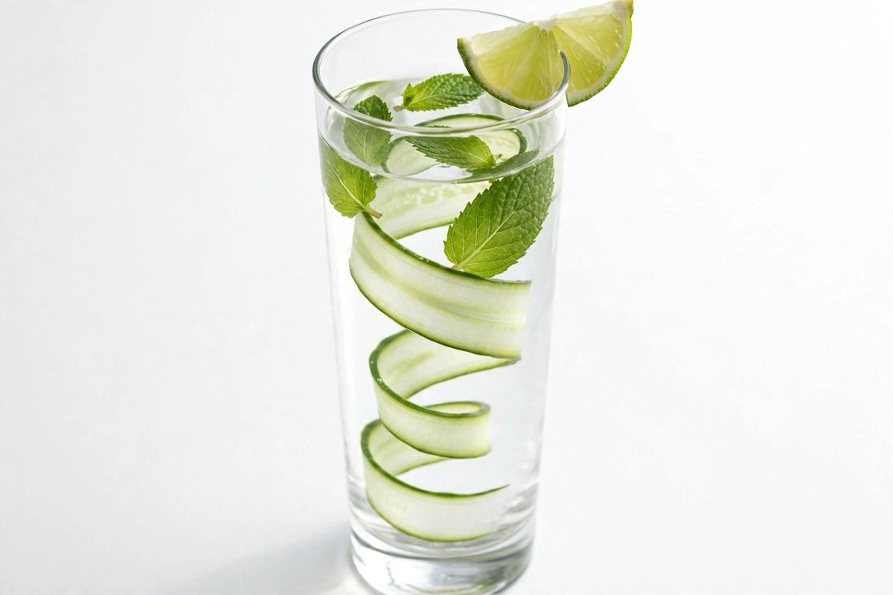
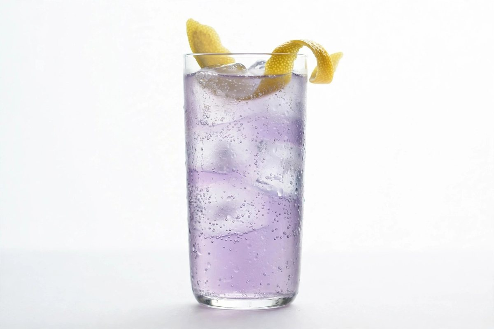
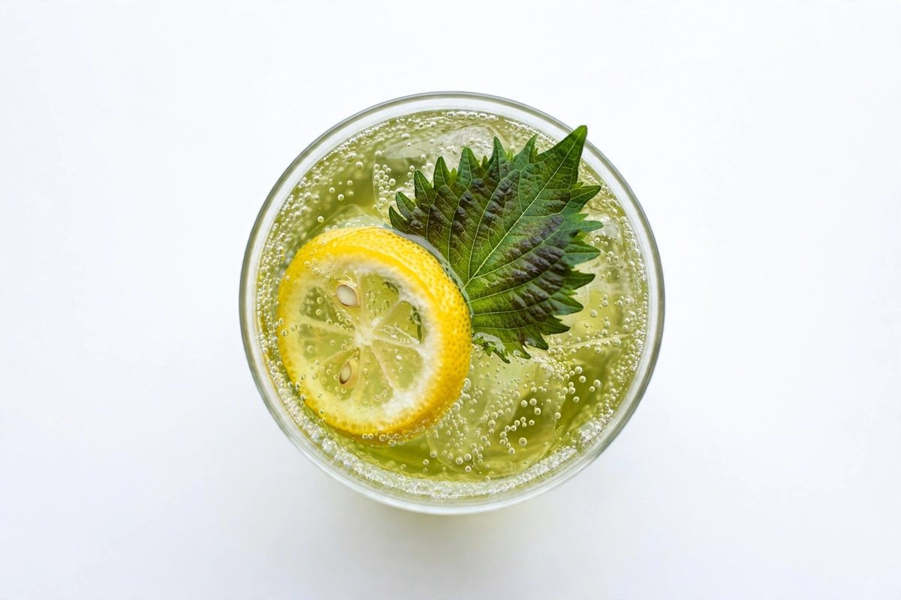

Agent Spritz
Elderflower Soda · Cucumber · Mint · Lime
Built at the table with whatever tools the moment calls for — muddle, strain, pour, garnish. An agent works the same way, choosing and using tools step by step to finish a task rather than answering from memory alone.
Pairs with: Retrieval Garden Crudo
Made with the right tools.

Signed Cordial
Violet Cordial · Soda · Lemon Peel
A violet cordial carrying a signature so subtle only the house can detect it. Watermarking marks generated work the same way — an invisible sign of origin, present for those who know how to look.
Pairs with: Self-Consistent Bavarois
Signed, invisibly.

Temperature Tonic
Green Tea · Shiso · Yuzu · Soda
Served precisely cool, never iced into numbness — the dial set deliberately between safe and surprising. Sampling temperature is that same dial for a model — turned low for the predictable, high for the unexpected.
Pairs with: Curriculum Pea Soup
Set exactly where intended.